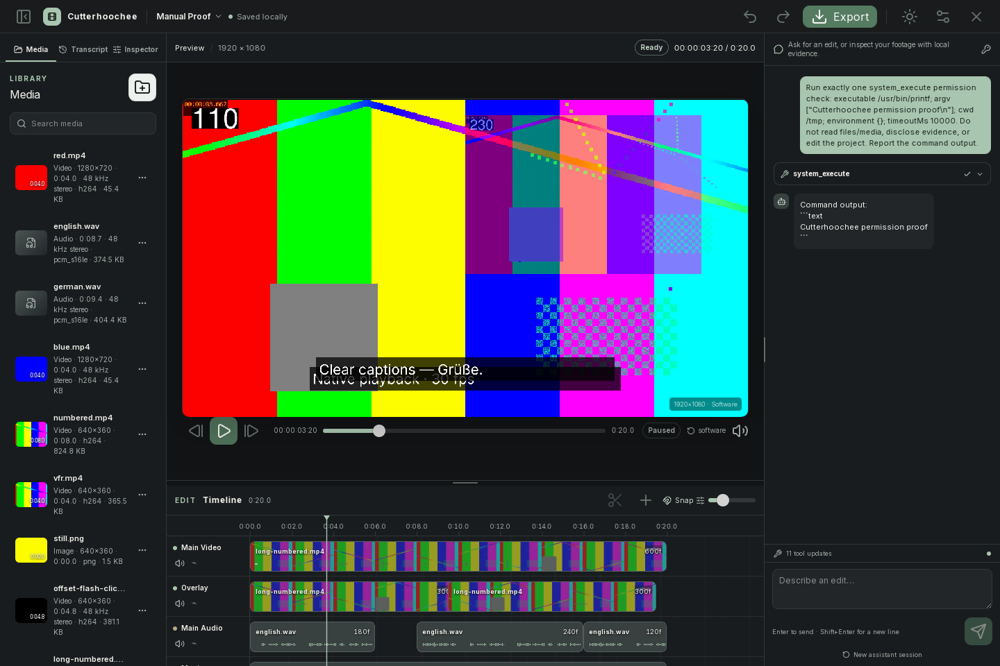
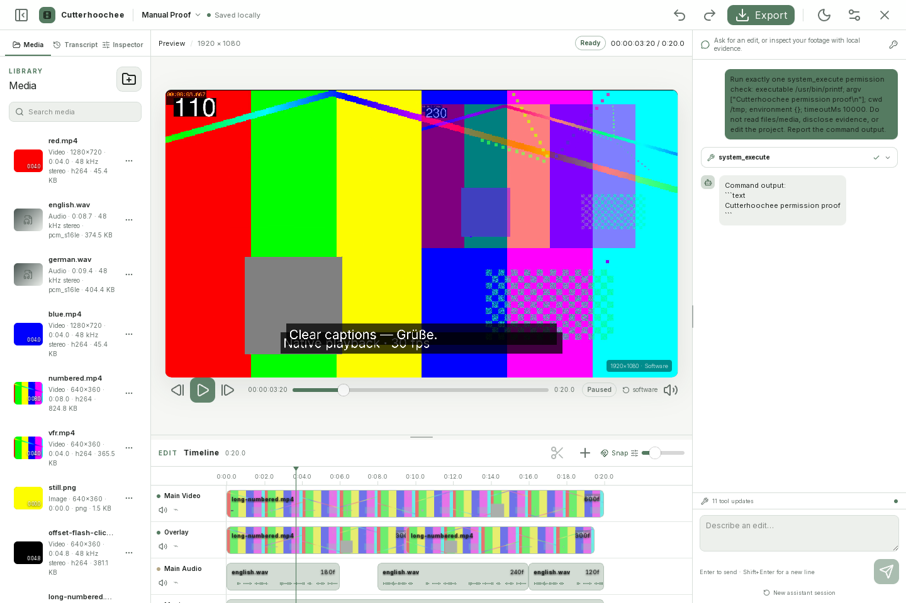
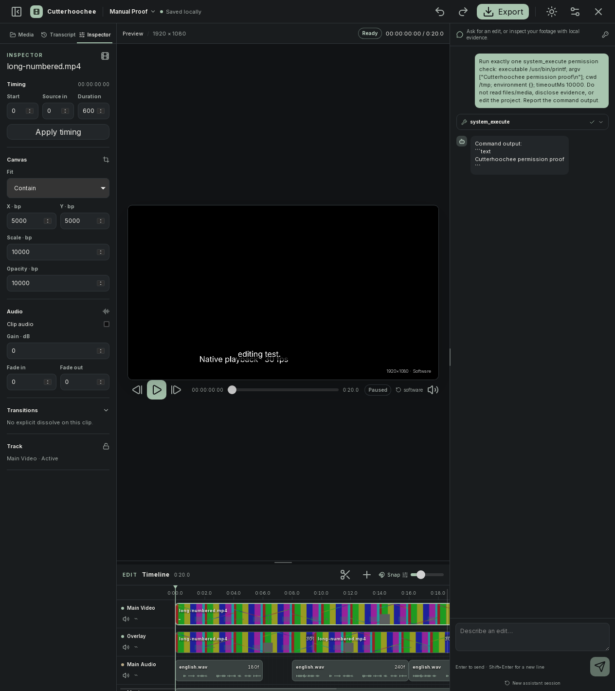
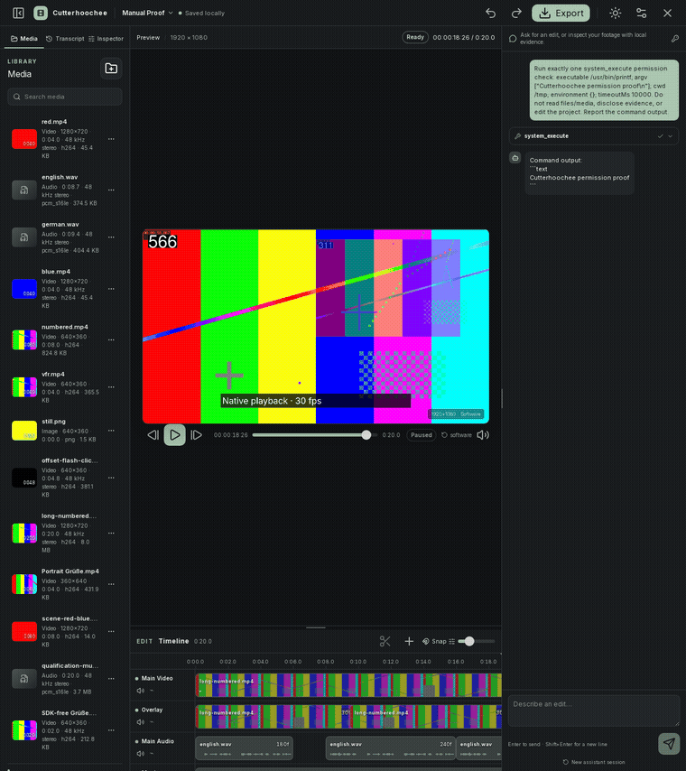
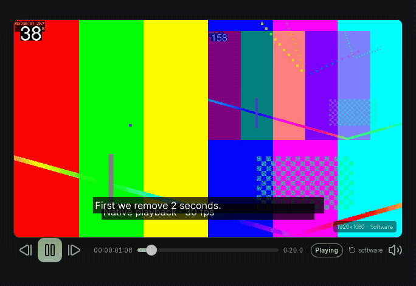
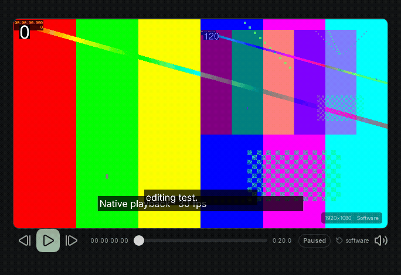
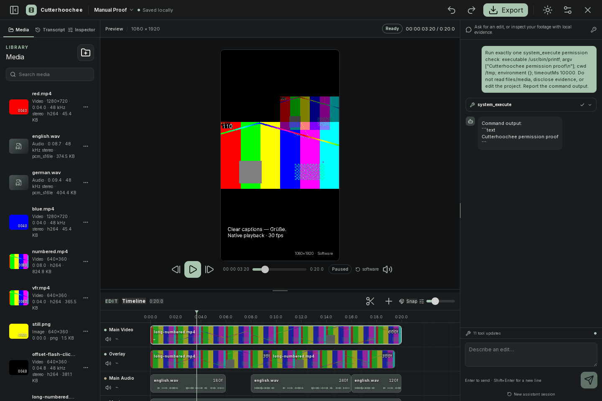
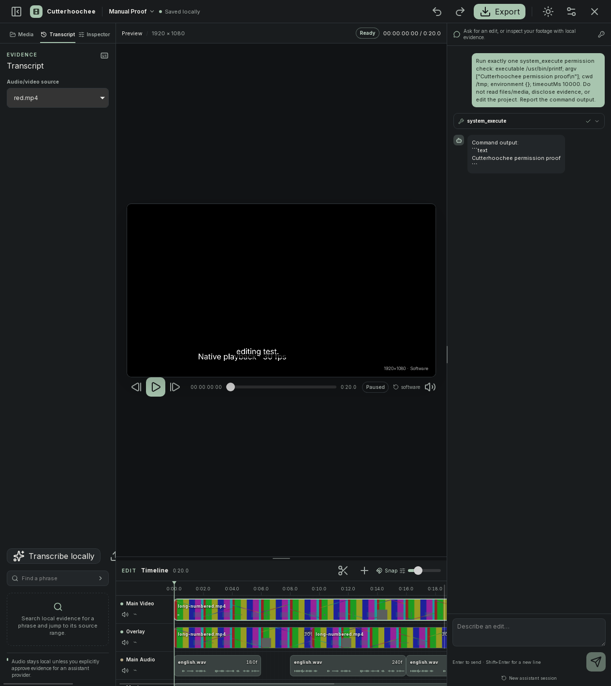
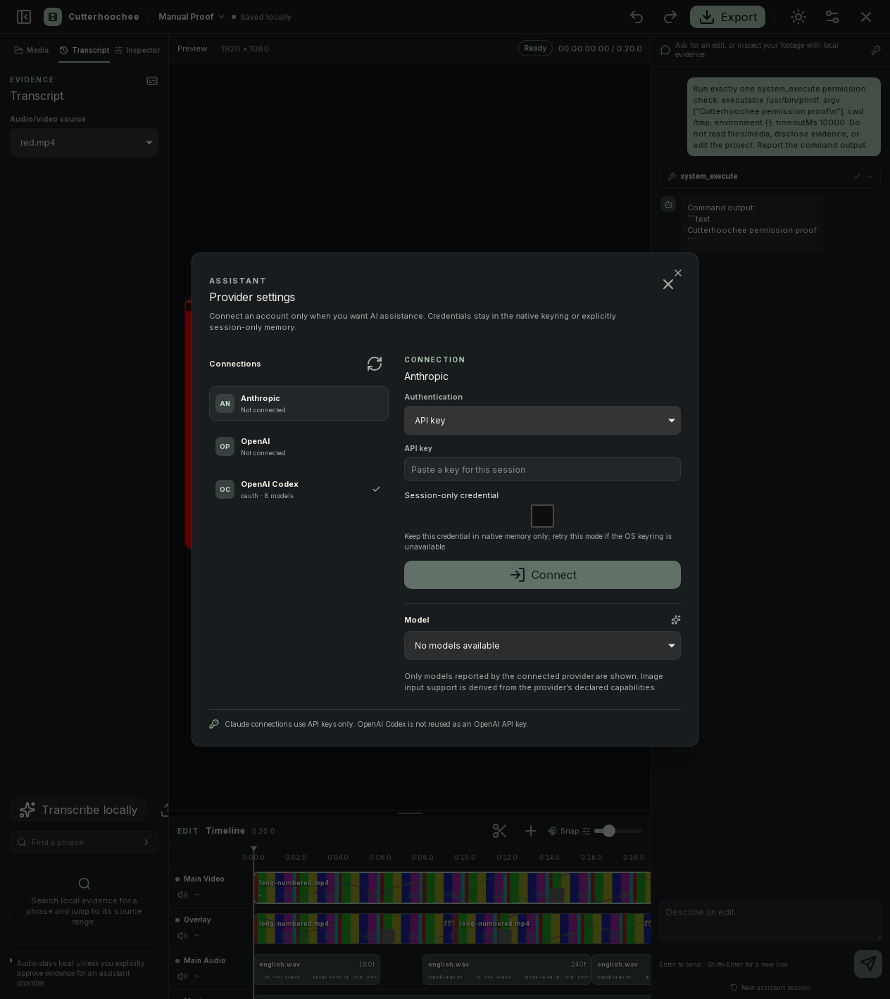
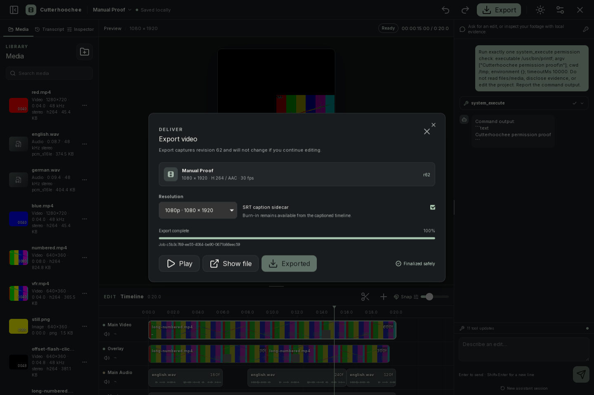

Cutterhoochee – Benutzerhandbuch (Deutsch)
Sprache: Die Benutzeroberfläche ist derzeit Englisch. Alle Schaltflächen, Menüs und Feldbezeichnungen werden in diesem Handbuch deshalb exakt in ihrer englischen Schreibweise angegeben; die Erläuterungen sind deutsch.
Cutterhoochee ist ein lokal ausgerichteter Videoeditor für Video, Audio, Bilder, Titel, Untertitel und einen optionalen Pi-Assistenten. Projekte, Medienvorbereitung und lokale Transkription bleiben auf diesem Gerät, sofern Sie nicht ausdrücklich eine externe Freigabe genehmigen. Die Anwendung benötigt eine native Desktop-Anbindung; ein reiner Browser-Vorschaumodus ersetzt diese nicht.
Inhaltsverzeichnis
- Überblick
- Installation und erster Start
- Rundgang durch den Arbeitsbereich
- Projektlebenszyklus
- Medienimport und Bibliothek
- Timeline-Bearbeitung
- Vorschau und Audio
- Inspector, Text und Übergänge
- Transkription und Untertitel
- Pi-Assistent, Anbieter und Berechtigungen
- Export
- Tastenkürzel
- Praktisches End-to-End-Tutorial
- Fehlerbehebung
- Datenschutz, Speicherung und Portabilität
- Einschränkungen und Glossar
1. Überblick
Was Cutterhoochee macht
Cutterhoochee verbindet eine klassische, nichtlineare Timeline mit lokal gespeicherten Medienartefakten und einem optionalen Assistenten. Der typische Ablauf ist:
- Über den zweistufigen Startassistenten ein Projekt anlegen oder einen gespeicherten
.cutproj-Ordner öffnen. - Video, Audio oder Bilder über einen nativen Dateidialog importieren oder externe native Dateien überall im Desktop-Fenster ablegen.
- Warten, bis die Medienvorbereitung abgeschlossen ist.
- Assets auf passende Spuren legen, schneiden, verschieben und trimmen.
- Vorschau, Audiopegel, Titel und Captions prüfen.
- Optional lokal transkribieren oder eine SRT-Datei importieren.
- Export starten und die fertige Datei beziehungsweise einen SRT-Sidecar öffnen.
Die Bearbeitung ist auf überprüfbare Projektänderungen ausgelegt: Änderungen werden als nachvollziehbare Transaktionen gespeichert und können über Undo und Redo zurückgenommen oder wiederhergestellt werden. Externe Dateisystem-, Netzwerk- oder Kommandoaktionen sind davon ausdrücklich ausgenommen.
Grundbegriffe
- Projekt: Ein Verzeichnis mit einer
project.json-Projektdatei und den von Cutterhoochee verwalteten Medien- und Arbeitsartefakten. - Asset: Ein importiertes Originalmedium mit geprüften Metadaten und vorbereiteten Artefakten.
- Clip: Eine Verwendung eines Assets auf einer Timeline-Spur. Mehrere Clips können auf dasselbe Asset verweisen.
- Spur (Track): Eine Video-, Audio- oder Textzeile in der Timeline.
- Playhead: Die vertikale Abspielposition. Sie wird in Frames gespeichert und zusätzlich als Zeitcode angezeigt.
- Caption: Zeitlich verankerte Untertitel. Ein Title ist dagegen ein frei platzierter Titel.
- Revision: Die Versionsnummer des Projektstands. Ein Export friert genau die beim Start angegebene Revision ein.
- Evidence: Lokal erzeugte, vom Projekt abgeleitete Informationen, zum Beispiel Transkriptspannen, Audiowellenform oder geprüfte Frame-Samples. Evidence wird nicht automatisch an einen Anbieter gesendet.
Medien und Demonstrationsmaterial in den Handbuchbildern
Die eingebetteten Screenshots und GIFs zeigen absichtlich erzeugtes Testmuster- beziehungsweise Demonstrationsmaterial. Sie sind keine persönlichen Aufnahmen und keine von Cutterhoochee mitgelieferten Nutzerdateien. Text wie Native playback - 30 fps, Farbbalken oder Zahlen im Bild gehört zum erzeugten Testvideo, nicht zu einem zusätzlichen App-Menü.

Abbildung 1: Vollständiger Arbeitsbereich im dunklen Theme. Die sichtbaren Clips und Farbmuster stammen aus generiertem Testmaterial.

Abbildung 2: Derselbe Arbeitsbereich im hellen Theme. Das Bild dokumentiert den Theme-Zustand, nicht eine deutsche UI-Lokalisierung.
2. Installation und erster Start
Verifizierter Desktop-Weg unter Linux
Verifiziert ist die Ausführung der Linux-x64-AppImage-Version. Bei einer bereitgestellten AppImage-Datei:
- Speichern Sie die Datei an einem Ort, an dem Sie sie dauerhaft aufbewahren möchten.
- Gewähren Sie der Datei in den Dateieigenschaften Ausführungsrechte oder machen Sie sie mit dem üblichen Linux-Dateimanager ausführbar.
- Starten Sie die AppImage-Datei.
- Warten Sie, bis das Cutterhoochee-Startfenster erscheint.
Das lokal erstellte Linux-x64-Paket dieses Arbeitsstands starten Sie aus dem Projektverzeichnis so:
chmod +x src-tauri/target/release/bundle/appimage/Cutterhoochee_0.1.0_amd64.AppImage
./src-tauri/target/release/bundle/appimage/Cutterhoochee_0.1.0_amd64.AppImage
Dieser Pfad bezeichnet eine lokale Build-Ausgabe, keinen öffentlichen Download. Das Paket enthält die Desktop-Laufzeit und die Medienwerkzeuge; das Sprachmodell wird erst nach Ihrer Zustimmung heruntergeladen. Das Handbuch können Sie unabhängig davon mit xdg-open docs/index.html offline lesen.
Bei einer FUSE-/Mount-Fehlermeldung unterstützt dieses Paket auch das vorübergehende Entpacken:
./src-tauri/target/release/bundle/appimage/Cutterhoochee_0.1.0_amd64.AppImage --appimage-extract-and-run
Dies benötigt zusätzlichen temporären Speicherplatz und behebt keine beschädigte Datei oder Grafiktreiberprobleme. Starten Sie den Editor nicht als root.
Plattformhinweis: Linux x64 AppImage wurde ausgeführt. Windows und macOS sind in dieser Dokumentation nicht verifiziert; ihre Start- und Paketdetails dürfen nicht aus dem Linux-Ablauf abgeleitet werden.
Status beim ersten Start
Oben im Startfenster sehen Sie eine Verbindungsanzeige:
Desktop ready: Die native Desktop-Anbindung ist verfügbar.Browser preview · desktop required: Die Oberfläche läuft ohne native Desktop-Anbindung. Sie können die Oberfläche prüfen, aber native Dialoge, Import, Projektpersistenz, Medienvorbereitung, Export und native Anbieter-/Berechtigungsaktionen sind dort nicht verfügbar.
Bleibt die Anzeige Browser preview · desktop required nach dem Start der AppImage bestehen, schließen Sie dieses Fenster und starten Sie die eigentliche AppImage statt einer Browser-Vorschau. Eine fehlende Desktop-Bridge wird nicht dadurch behoben, dass Sie den Import im Browser wiederholen.
Neues Projekt anlegen
Klicken Sie im Startbildschirm auf Start a new project. Der Assistent hat zwei Schritte:
- Unter
Choose a visual formatwählen Sie eine Formatkarte:Vertical video—9:16,1080 × 1920, fürShorts · Reels · TikTokLandscape—16:9,1920 × 1080, fürYouTube · filmSquare—1:1,1080 × 1080, fürSocial posts
- Klicken Sie auf
Continue to details. - Unter
Name and review your projecttragen Sie einenProject nameein. Das Feld beginnt mitUntitled project, aber ein nichtleerer Name ist erforderlich. Advanced settingsist optional. Dort wählen Sie unterFrame ratestandardmäßig30 fps; zusätzlich sind24 fps,25 fpsund60 fpsverfügbar.- Prüfen Sie Format, Abmessungen und Framerate, klicken Sie
Create projectund wählen Sie im nativen Dialog den übergeordneten Ordner. Darin wird<Projektname>.cutprojangelegt.
Back to format bewahrt die ausgewählte Karte und führt zum ersten Schritt zurück. Wird der Ordnerdialog abgebrochen, bleiben Karte, Name und Framerate im Assistenten erhalten. Wählen Sie Format und Framerate vor dem Import; eine spätere Quelle wird in dieses Projektprofil normalisiert und ändert es nicht.
Gespeichertes Projekt öffnen
- Klicken Sie im Startbildschirm auf
Open projectoder öffnen Sie bei einem bereits geöffneten Projekt das Projektmenü und wählen SieOpen project…. - Wählen Sie im nativen Ordnerdialog das gespeicherte
.cutproj-Verzeichnis, nicht eine beliebige Mediendatei. - Warten Sie, bis Projektstatus, Bibliothek und Timeline geladen sind.
Eine Liste fingierter letzter Projektnamen gibt es nicht. Jede Aktion Open project verwendet den gespeicherten .cutproj-Ordnerdialog; merken Sie sich daher den übergeordneten Ordner für späteres Öffnen und Sichern.
Wenn bereits ein Projekt geöffnet ist, weist der Startbildschirm darauf hin, dass Sie zum erneuten Verbinden des Startzustands das Desktop-Fenster aktualisieren sollen. Öffnen Sie nicht gleichzeitig dasselbe Projekt schreibend in mehreren Cutterhoochee-Prozessen.
3. Rundgang durch den Arbeitsbereich
Nach dem Öffnen eines Projekts ist der Arbeitsbereich in Kopfzeile, linker Werkzeugspalte, zentraler Vorschau mit Timeline und rechter Assistentenspalte gegliedert.
Kopfzeile
Von links nach rechts finden Sie:
- Cutterhoochee- und Projektnamen sowie den lokalen Speicherstatus, typischerweise
Saved locally. UndoundRedofür Projekttransaktionen.- Der Projekttitel öffnet ein Projektmenü mit
Open project…,Save project(Ctrl/Cmd+S), dem Wechsel des hellen/dunklen Themes,Provider settingsundClose project. Saved locallybeziehungsweise ein aktueller Statushinweis zeigt den letzten lokalen Speicherstatus.Importöffnet den nativen Medienauswahldialog (auch mitCtrl/Cmd+I).ExportöffnetExport video(auch mitCtrl/Cmd+E).- Der Assistentenschalter blendet mit
Hide assistantdie rechte Spalte aus;Open assistantblendet sie wieder ein.
Saved locally bezieht sich auf den Projektstand auf diesem Gerät. Es bedeutet nicht, dass ein Cloud-Sync stattfindet. Verwenden Sie für wichtige Arbeiten Save project und kopieren Sie das Projektverzeichnis erst nach erfolgreichem Speichern.
Linke Werkzeugspalte
Die Werkzeugspalte hat drei Tabs:
Media: Importierte Assets, Suche, Vorschauen und Medienaktionen.Transcript: Auswahl einer Audio-/Videoquelle, lokale Transkription, SRT-Import, Suche undApply captions.Inspector: Eigenschaften des ausgewählten Clips oder Textobjekts.

Abbildung 3: Der Tab Inspector für einen ausgewählten Videoclip. Sichtbar sind die Abschnitte Timing, Canvas, Audio und Transitions; die Werte müssen als tatsächliche Projektfelder verstanden werden, nicht als simulierte Bildbeschriftungen.
Zentrale Vorschau
Die Vorschau zeigt das Bildformat des Projekts und darunter native Transportsteuerungen:
Previous framePlaybeziehungsweisePauseNext framePreview playheadals Schieberegler- aktueller Zeitcode und Gesamtdauer
- Transportstatus wie
paused,playing,bufferingodererror - Qualitätsumschalter
auto/software - Audioanzeige, deren Taktung durch die native Uhr erfolgt
Die Vorschau zeigt die gerenderte Projektkomposition, nicht einfach die unveränderte Originaldatei. Bei Fehlern erscheint Retry preview.
Timeline
Unter der Vorschau liegt die Timeline mit:
Timelineund Gesamtdauer,- Scheren-Schaltfläche
Split selected clip, Add title,Snap,Timeline zoom,- Zeitlineal und Playhead,
- Video-, Audio- und Textspuren.
Ein Clip zeigt bei vorbereitetem Videomaterial eine Thumbnail-Leiste und bei Audio eine Wellenform. native kennzeichnet eine aus einem verwalteten Artefakt erzeugte Darstellung. Ein fehlendes Vorschaubild bedeutet nicht automatisch, dass das Original gelöscht wurde.
Rechte Assistentenspalte
Die rechte Spalte ist als Assistant chat ausgeführt. Unten steht das Eingabefeld Describe an edit.... Der Assistent kann – je nach verbundenem Anbieter, Modell und ausdrücklicher Evidence-Freigabe – Projektstatus lesen, lokale Evidence anfordern und validierte Projektaktionen vorschlagen oder ausführen. Er erhält nicht automatisch die Originaldatei als Videostream.
Die Spaltenbreiten lassen sich über die sichtbaren Resize timeline- und Resize assistant-Trenner verändern. Hide assistant in der Kopfzeile klappt die rechte Spalte ein; Open assistant stellt sie wieder her, ohne die Unterhaltung zu ändern.
Theme wechseln
Klicken Sie im Projektmenü auf den Eintrag zum Wechsel des hellen oder dunklen Themes. Das Symbol wechselt zwischen Sonne und Mond. Die Einstellung ändert nur die Darstellung des Arbeitsbereichs, nicht Medien, Projektformat oder Exportdaten.
GIF-Demonstration anzeigen (ohne Ton)

Abbildung 4: theme-switch.gif zeigt den tatsächlichen Arbeitsbereich, der zwischen den Themes wechselt. Das GIF verwendet weiterhin generiertes Demonstrationsmaterial.
4. Projektlebenszyklus
Anlegen, bearbeiten, speichern
Ein neues Projekt beginnt mit einer leeren Timeline und den anfänglichen Spuren. Legen Sie es über Start a new project, die Formatkarte, Continue to details und Name and review your project an. Advanced settings zeigt die Framerate-Auswahl mit 30 fps als Standard sowie 24 fps, 25 fps und 60 fps. Nach Create project wählen Sie den übergeordneten Ordner im nativen Dialog; dort entsteht <Projektname>.cutproj.
Back to format bewahrt die bisher eingegebenen Werte. Wird der Ordnerdialog abgebrochen, bleibt der Assistent mit diesen Werten geöffnet. Importierte Assets und alle Clips werden in der Projektdefinition referenziert. Jede akzeptierte Bearbeitung wird als neue Revision gespeichert; der sichtbare Status kehrt danach zu Saved locally zurück.
Speichern Sie zusätzlich bewusst mit Ctrl/Cmd+S oder über Save project im Projektmenü, insbesondere vor größeren Umstrukturierungen, vor dem Beenden und vor einer Sicherung. Ctrl+S gilt unter Linux und Windows, Cmd+S unter macOS.
Öffnen und fortsetzen
Zum Fortsetzen:
- Öffnen Sie das
.cutproj-Verzeichnis mitOpen project. - Prüfen Sie in
Media, ob die Assets vorbereitet sind. - Klicken Sie die relevanten Clips an und kontrollieren Sie im
InspectorQuelle, Timing und Audio. - Springen Sie in der Timeline an die zuletzt bearbeitete Position.
Es gibt keine Liste fingierter letzter Projektnamen. Open project öffnet immer den nativen Ordnerdialog; ein vollständiges Projekt enthält verwaltete Medienkopien. Sind diese intakt, bleiben Bearbeitung, Vorschau und Export möglich, auch wenn eine ursprüngliche Quelldatei verschoben wurde. Relink wird zur Wiederherstellung fehlender benötigter Medienartefakte benötigt, nicht pauschal nach jedem Umzug.
Revision und Konflikte
Projektaktionen werden gegen eine erwartete Revision ausgeführt. Wenn ein anderer Prozess oder ein veraltetes Fenster das Projekt verändert hat, zeigt Cutterhoochee den aktuellen Stand an, statt eine fremde Änderung blind zu überschreiben. Bei einer Konfliktmeldung:
- Lesen Sie die Meldung vollständig.
- Aktualisieren Sie den Arbeitsbereich.
- Prüfen Sie, ob Ihre letzte Aktion sichtbar ist.
- Wiederholen Sie sie erst, wenn die aktuelle Auswahl und Revision stimmen.
Undo und Redo
Undo und Redo arbeiten chronologisch auf Projektebene. Sie sind für validierte Timeline-, Clip-, Text- und Transkript-Caption-Änderungen gedacht. Sie machen keine externen Wirkungen rückgängig: Ein ausgeführter Systembefehl, eine Netzwerkübertragung, das Überschreiben einer fremden Datei oder ein Export außerhalb der Projektdefinition wird nicht durch Timeline-Undo zurückgenommen.
Sicherheitsregel: Prüfen Sie vor jeder destruktiven Aktion Auswahl, Playhead und Zielspur. Verwenden Sie
Undoals Korrekturhilfe, nicht als Ersatz für eine Sicherung.
Projektkopie erstellen
Beenden Sie Cutterhoochee oder stellen Sie sicher, dass gerade nicht geschrieben wird, und kopieren Sie das gesamte .cutproj-Verzeichnis. Kopieren Sie nicht nur project.json: Verwaltete Medien, Thumbnails, Wellenformen und Transkripte liegen als getrennte Artefakte im Projektlayout.
5. Medienimport und Bibliothek
Unterstützte Importarten
Die native Medienprüfung akzeptiert standalone lokale Medien aus einer begrenzten Allowlist von Demuxern und tatsächlich decodierbaren Streams, darunter gängige Video-/Container-, Audio- und Bildquellen. Ob eine konkrete Datei decodierbar ist, hängt zusätzlich von ihren enthaltenen Streams und dem gebündelten nativen FFmpeg ab.
Bei einer Meldung über ein nicht unterstütztes Medium oder einen nicht erlaubten Demuxer kann die Datei nicht verarbeitet werden. Benennen Sie sie nicht lediglich um; verwenden Sie gegebenenfalls eine kompatible, lokal erzeugte Kopie. Playlists und Netzwerkmedien wie HLS, DASH, Concat-/Segment-Listen, HTTP oder RTSP sind keine standalone Importquellen.
Import über die Oberfläche
Sie können Medien auf drei Wegen importieren:
- Klicken Sie im geöffneten Projekt oben auf
Importoder im TabMediaaufImport media. - Drücken Sie
Ctrl/Cmd+Iaußerhalb eines Eingabefelds. - Legen Sie externe native Video-, Foto- oder Audiodateien überall im Desktop-Fenster ab.
Der native Dateidialog beziehungsweise die native Dateifreigabe legt fest, welche Dateien Cutterhoochee lesen darf. Bei einem Drop autorisiert die native Laufzeit genau die abgelegten Pfade; bestätigen Sie nur die angezeigte Dateifreigabe, falls eine Anfrage erscheint. Ein Browser-Drop oder ein frei eingegebener Pfad umgeht diese Autorisierung nicht.
Achtung – Dateizugriff: Wählen Sie nur die Dateien und Verzeichnisse aus, die Sie wirklich verwenden möchten. Eine Importfreigabe ist keine pauschale Berechtigung für das gesamte Dateisystem.
Medienvorbereitung abwarten
Nach dem Import erscheint das Asset sofort oder als laufende Vorbereitung in der Bibliothek. Für Video werden unter anderem ein normalisierter Master und eine Proxy-/Vorschauableitung erzeugt; für Audio wird normalisiertes Stereo-PCM mit 48 kHz vorbereitet. Die Oberfläche kann währenddessen Preparing normalized media… oder Media preparation is incomplete. anzeigen.
Ein Asset ist für die Timeline erst geeignet, wenn seine erforderlichen normalisierten Artefakte vorhanden sind. Die Vorbereitung kann je nach Länge, Auflösung und Audio deutlich länger als der Dialog selbst dauern.
Bibliothek lesen und durchsuchen
Im Tab Media:
Search mediafiltert nach Dateiname.- Jeder Eintrag zeigt Typ (
Video,AudiooderImage), verfügbare Abmessungen, Dauer, Audioformat, Codec und Dateigröße, soweit vorhanden. - Klicken Sie einen Eintrag an, um ihn zu markieren und die Aktionen einzublenden.
Inspectstößt eine native Prüfung an und aktualisiert die Ansicht; die aktuelle Oberfläche zeigt keinen gesonderten Bericht zur Originalidentität.Add to timelinefügt ein vorbereitetes Asset mit der unten beschriebenen Standardplatzierung ein.Relinkwird angeboten, wenn die für das Asset benötigten normalisierten Artefakte nicht bereit sind.Removeentfernt den Asset-Eintrag nur, wenn keine Clips mehr darauf verweisen.
Cutterhoochee verwaltet Kopien und abgeleitete Artefakte im Projekt. Die Originaldatei außerhalb des Projekts wird durch Remove nicht gelöscht. Umgekehrt entfernt das Löschen eines Assets nicht automatisch die zugrunde liegende persönliche Originaldatei.
Asset in die Timeline bringen
- Wählen Sie im Tab
Mediaein vorbereitetes Asset. - Klicken Sie
Add to timelinefür die Standardplatzierung: Video und Bilder werden an das Ende der ersten Videospur angehängt. Audio beginnt auf der ersten Audiospur bei Frame 0; bei einer vorhandenen Timeline wird die Einfügedauer auf deren Länge begrenzt. Für eine andere Position ziehen Sie das Asset gezielt auf die Timeline oder ändern anschließendStartim Inspector. - Ziehen Sie den Eintrag auf eine kompatible Spur: Video und Standbilder auf eine Videospur, Audio auf eine Audiospur.
- Prüfen Sie den neu erzeugten Clip und seine Startposition.
Ein Videoclip ohne Audiostream kann kein Clip-Audio aktivieren. Ein Standbild beginnt immer am Quellenframe null und besitzt kein Clip-Audio. Ein Asset muss vollständig normalisiert sein; unvollständige Medien lassen sich nicht als gültige Clips referenzieren.
Quelle nicht verfügbar: Relink
Eine verschobene Originaldatei allein macht ein vollständig gespeichertes Projekt nicht unbrauchbar. Falls benötigte verwaltete Artefakte fehlen und der Bibliothekseintrag Relink anbietet:
- Markieren Sie das betroffene Asset.
- Klicken Sie
Relink. - Wählen Sie im nativen Dialog genau die beabsichtigte Ersatzdatei.
- Warten Sie die erneute Identitätsprüfung und die angebotene Medienvorbereitung ab.
- Prüfen Sie anschließend Thumbnails, Wellenform, Dauer und Vorschau.
Die Datei muss zur gespeicherten Identität und zum Asset passen. Ein bloß ähnlicher Dateiname genügt nicht; wenn sich der Inhalt geändert hat, behandelt Cutterhoochee das als andere Quelle.
Medien entfernen
Entfernen Sie zuerst alle Clips, die auf das Asset verweisen. Erst dann wird Remove in der Bibliothek erfolgreich sein. Die Reihenfolge schützt davor, dass die Timeline auf ein nicht mehr vorhandenes Asset zeigt.
Achtung – destruktiv:
Removeentfernt den Asset-Eintrag aus dem Projekt. Sichern Sie das Projekt vorher, wenn Sie nicht sicher sind, ob eine spätere Wiederverwendung davon abhängt. Das Löschen des Projekt-Assets ist nicht dasselbe wie das Löschen der Originaldatei.
6. Timeline-Bearbeitung
Spuren, Auswahl und Playhead
Eine neue Projektdefinition enthält die Spuren Main Video, Main Audio und Text. Weitere sichtbare Spurennamen können aus dem jeweiligen Projekt stammen. Jede Spur hat eine eigene Zeile und eigene Schalter:
MutebeziehungsweiseUnmuteschaltet den Audiobeitrag der Spur für Vorschau und Export ein oder aus. Bei einer Videospur bleibt das Bild sichtbar; nur ihr Ton wird stummgeschaltet.LockbeziehungsweiseUnlockschützt die Spur vor Bearbeitung.- Der Status zeigt
Locked,MutedoderActive.
Klicken Sie auf einen Clip, um ihn auszuwählen. Mit Shift können Sie mehrere Clips ergänzend auswählen. Textobjekte werden separat ausgewählt; eine Textauswahl und eine Clipauswahl werden nicht vermischt.
Klicken Sie in das Zeitlineal, um den Playhead zu setzen. Ziehen Sie im Zeitlineal von einem Start- zu einem Endpunkt, um eine Range zu markieren. Der Range-Zeitbereich wird für die Ripple-Entfernung verwendet.
Clips einfügen und verschieben
- Importieren und normalisieren Sie das gewünschte Asset.
- Ziehen Sie es aus
Mediaauf eine passende Spur. - Setzen Sie den Playhead an die gewünschte Position oder ziehen Sie den Clip an eine neue Stelle.
- Lassen Sie den Clip los und warten Sie die bestätigte Transaktion ab.
Ist Snap aktiv, rastet die Position in der Nähe von Clipkanten, Playhead und Anfangspunkten ein. Schalten Sie Snap aus, wenn Sie bewusst framegenau neben einer Kante platzieren möchten. Ein Clip darf weder seine Quellenlänge überschreiten noch eine unzulässige Überlappung erzeugen.
Zoomen und Navigieren
Mit Timeline zoom vergrößern oder verkleinern Sie die horizontale Darstellung. Beim Zoomen versucht die Oberfläche, die Playhead-Position im sichtbaren Bereich zu halten. Verwenden Sie die horizontalen und vertikalen Scrollbereiche, um lange Projekte und viele Spuren zu navigieren.
Clip am Playhead teilen
Voraussetzungen: Ein Clip ist ausgewählt und der Playhead liegt innerhalb des Clips, nicht auf seiner Außenkante.
- Wählen Sie den Clip.
- Platzieren Sie den Playhead an der gewünschten Trennstelle.
- Klicken Sie
Split selected clip, wählen Sie im KontextmenüSplit at playheadoder drücken SieS. - Prüfen Sie, dass die zwei Teilclips ihre erwarteten Source-in- und Timeline-Intervalle haben.
Ein Clip mit einem expliziten Dissolve muss vor dem Teilen über Remove dissolve bereinigt werden. Das hält den Übergangsgraphen eindeutig. Liegt der Playhead außerhalb des Clips oder ist die Spur gesperrt, wird die Aktion nicht ausgeführt.
Clip entfernen
- Wählen Sie einen oder mehrere Clips.
- Drücken Sie
Deleteoder wählen Sie im KontextmenüRemove clip. - Prüfen Sie die entstehende Lücke und verwenden Sie bei Bedarf
Undo.
Für eine Ripple-Entfernung markieren Sie im Zeitlineal einen gültigen Bereich und drücken Shift+Delete. Cutterhoochee entfernt dann den Bereich mit Ripple-Verhalten. Ohne gültige Range fällt Shift+Delete auf das Löschen der ausgewählten Clips zurück; es ist dann kein wirkungsloser Befehl.
Achtung – destruktiv:
Deleteund besondersShift+Deleteändern die Timeline sofort als Projekttransaktion. Kontrollieren Sie Auswahl, Range und betroffene Spuren. Ohne gültige Range löschtShift+Deletedie ausgewählten Clips. Verwenden Sie bei einer unbeabsichtigten Änderung unmittelbarUndo.
Trimmen über den Inspector
Für framegenaues Trimmen ist der Tab Inspector zuverlässiger als ein ungenauer Drag:
- Wählen Sie den Clip.
- Öffnen Sie
Inspector. - Im Abschnitt
Timingbearbeiten SieStart,Source inundDuration. - Verwenden Sie für
StartundSource innichtnegative ganze Frames;Durationmuss mindestens einen Frame betragen. - Klicken Sie
Apply timing.
Start ist die Timeline-Position, Source in der Quellenbeginn, Duration die Clipdauer. Der Quellenbereich muss innerhalb der normalisierten Asset-Grenzen bleiben. Ein Trim kann einen betroffenen expliziten Dissolve entfernen; prüfen Sie die Transition-Anzeige anschließend.
Audiospuren und Sperren
Lock schützt die Spur vor Bearbeitung. Mute schaltet den Audiobeitrag der gesamten Spur in Vorschau und Export stumm; bei einer stummgeschalteten Videospur bleibt das Bild sichtbar. Mit Clip audio deaktivieren Sie den Ton des ausgewählten Video- oder Audioclips.
7. Vorschau und Audio
Native Vorschau bedienen
Die Vorschau verwendet die aktuelle Projekt-Revision und die native Render-/Transportlogik:
Playstartet die Wiedergabe.Pausehält sie an.Previous frameundNext framebewegen den Playhead frameweise.Preview playheadspringt zu einem bestimmten Frame.- Der Zeitcode links zeigt die aktuelle Position, rechts die Gesamtdauer.
Die Vorschau kann buffering anzeigen, während das nächste Bild oder Audioartefakt vorbereitet wird. ended beendet die Wiedergabe am Ende. Bei error verwenden Sie zuerst Retry preview; bleibt der Fehler bestehen, wechseln Sie vorübergehend auf software.
GIF-Demonstration anzeigen (ohne Ton)

Abbildung 5: playback.gif zeigt den Preview-Transport bei laufendem, generiertem Demonstrationsvideo. Die eingeblendeten Farbbalken, Zahlen und Texte sind Testmaterial und keine Nutzeraufnahme.
Auto und Software Preview
Der Qualitätsumschalter zeigt auto oder software. Klicken Sie auf den Umschalter Toggle software preview, wenn die automatische Auswahl auf dem Rechner nicht funktioniert. software ist ein Kompatibilitäts-/Fallbackmodus und kann langsamer sein. Er ändert nicht die Projektdateien oder Exportauflösung.
Ein erfolgreich automatisiertes DOM- oder WebView-Ergebnis beweist nicht allein, dass jedes GPU-/Fenster-Backend sichtbar rendert. Bei einer tatsächlich leeren Desktopfläche ist der native Start- und Grafikpfad zu prüfen; verwenden Sie die in Fehlerbehebung genannten Schritte.
Vorschau-Seek ist keine Timeline-Bearbeitung
GIF-Demonstration anzeigen (ohne Ton)

Abbildung 6: timeline-seek.gif zeigt das Verschieben des Schiebereglers Preview playhead. Es zeigt nicht das Ziehen, Trimmen oder Verschieben eines Clips in der Timeline.
Wenn Sie im GIF den Positionsregler bewegen, wird der Playhead gespeichert und die Vorschau springt. Für Timeline-Änderungen müssen Sie die Timeline selbst beziehungsweise den Inspector verwenden.
Audio prüfen
Audio wird beim Import auf eine gemeinsame normalisierte Basis gebracht. Bereitete Audioclips können in der Timeline eine Wellenform anzeigen. Die Vorschau signalisiert mit dem Lautsprechersymbol, dass das Vorschauaudio nach der nativen Uhr geplant wird.
Für einen einzelnen Clip:
- Wählen Sie den Clip und öffnen Sie
Inspector. - Für den Ton eines Video- oder Audioclips können Sie im Abschnitt
AudioClip audioaktivieren oder deaktivieren. - Ändern Sie
Gain · dBinnerhalb des unterstützten Bereichs-60bis12dB. - Setzen Sie
Fade inundFade outals Frameanzahl. - Spielen Sie den betroffenen Bereich erneut ab.
Der Schalter Clip audio gilt für Video- und Audioclips. Mute schaltet den Audiobeitrag der gesamten Spur in Vorschau und Export stumm; bei einer stummgeschalteten Videospur bleibt das Bild sichtbar. Gain · dB und Fades beeinflussen den Pegel. Prüfen Sie die fertige Ausgabe hörbar.
8. Inspector, Text und Übergänge
Clip-Inspector
Wählen Sie einen Videoclip, Audioclip oder Bildclip und öffnen Sie den Tab Inspector. Die verfügbaren Gruppen sind:
Die verfügbaren Gruppen hängen vom Spurtyp ab: Canvas und Transitions gelten für Clips auf Videospuren; Audio gilt für Clips auf Video- und Audiospuren.
Timing
Start: Timeline-Start in Frames.Source in: Startframe im normalisierten Asset.Duration: Dauer in Frames.Apply timing: Werte als eine geprüfte Timing-Änderung anwenden.
Start und Source in sind nichtnegative ganze Frames; Duration muss mindestens einen Frame betragen. Ein Clip darf die vorbereitete Quelle nicht überlaufen.
Canvas
Bei einem Clip auf einer Videospur bietet der Abschnitt Canvas:
Fit:Containbewahrt den gesamten Inhalt innerhalb des Canvas;Coverfüllt den Canvas und kann Bildbereiche abschneiden.X · bpundY · bp: Mittelpunktposition in Basispunkten von0bis10000;5000liegt jeweils in der Mitte der Projektfläche.Scale · bp: Skalierung von100bis40000;10000entspricht 100 %,5000entspricht 50 % der eingepassten Größe.Opacity · bp: Deckkraft von0(unsichtbar) bis10000(vollständig deckend);5000entspricht 50 %.
Bearbeiten Sie Positionen mit Bedacht, besonders bei Vertical video (9:16): Eine im Querformat gut sichtbare Position kann im Hochformat außerhalb des sicheren sichtbaren Bereichs liegen.
Audio
Bei einem Clip auf einer Video- oder Audiospur bietet der Abschnitt Audio:
Clip audio: Ton des ausgewählten Video- oder Audioclips an- oder ausschalten.Gain · dB: Clipverstärkung beziehungsweise -absenkung.Fade inundFade out: Ein-/Ausblenddauer in Frames.
Standbilder und Videos ohne Audiostream können kein Clip-Audio aktivieren.
Transitions
Der Abschnitt Transitions steht für Clips auf Videospuren zur Verfügung.
Cutterhoochee stellt den verifizierten Übergang Dissolve bereit. Er verbindet zwei aufeinanderfolgende Clips einer Videospur. Die Dauer muss mindestens zwei Frames betragen und kürzer als die Dauer beider beteiligten Clips sein.
- Wenn ein Übergang vorhanden ist, erscheint
Dissolve · NfundRemove dissolve. - Wenn ein geeigneter nächster Videoclip vorhanden ist, geben Sie unter
Frameseine Dauer ein und klicken aufDissolve next. - Vor
Splitmuss der Übergang entfernt werden. - Übergänge auf Audiospuren werden nicht als
Dissolveunterstützt.
Titel hinzufügen und bearbeiten
- Stellen Sie den Playhead auf die gewünschte Titelposition.
- Klicken Sie in der Timeline auf
Add title. - Cutterhoochee erzeugt auf der Textspur einen Titel mit dem Standardtext
Your titleund einer anfänglichen Dauer von etwa drei Sekunden. - Wählen Sie das Textobjekt und öffnen Sie
Inspector. - Bearbeiten Sie
Text, wählen SieStyle(CleanoderBoxed), ändern Sie Schriftgröße und Position. - Klicken Sie außerhalb des Feldes, damit der Wert übernommen wird.
Ist keine Textspur vorhanden, meldet die Oberfläche, dass Sie zuerst eine Textspur hinzufügen müssen. Die aktuelle Standard-Projektdefinition bringt eine Textspur mit.
Text-Inspector
Bei einem ausgewählten Title oder einer Caption zeigt die Überschrift Title beziehungsweise Caption. Die sichtbaren Felder sind:
Text: mehrzeiliger Inhalt.Style:CleanoderBoxed.Font sizebeziehungsweise die entsprechende Größenangabe.- Positionierungswerte für X und Y.
Remove titlebeziehungsweiseRemove captionzum Entfernen des ausgewählten Textobjekts.
Änderungen werden beim Verlassen des Felds als Update text gespeichert. Für einen längeren Text verwenden Sie explizite Zeilenumbrüche und prüfen Sie das Ergebnis in der Vorschau.
Captions und Titel unterscheiden
Ein frei platzierter Title besitzt seine eigene Timeline-Position und Dauer. Eine auf einen Clip angewendete Caption besitzt dagegen eine Quellen-Spanne, die in den Clip projiziert wird. Trimmen oder Verschieben des Clips kann deshalb den sichtbaren Caption-Bereich mitbewegen oder beschneiden. Prüfen Sie nach Clipänderungen alle betroffenen Captions.

Abbildung 7: Portrait-Vorschau mit der sichtbaren Caption Clear captions — Grüße. und dem nativen Wiedergabe-Hinweis im erzeugten Testbild. Das Bild dokumentiert keine deutsche UI-Übersetzung.
9. Transkription und Untertitel
Voraussetzungen für lokale Transkription
Der Tab Transcript listet unter Audio/video source nur Audio- oder Videoassets mit vorbereitetem, normalisiertem Audio. Ohne ein solches Asset erscheint No normalized audio source.

Abbildung 8: Initialer Zustand des Tabs Transcript. Transcribe locally und Import SRT sind sichtbar, aber es ist noch kein fertiges Transkript dargestellt; die Abbildung darf nicht als abgeschlossene Transkription interpretiert werden.
Speech-Modell und Einwilligung
Klicken Sie bei gewählter Audio-/Videoquelle auf Transcribe locally. Wenn das native, gepinnte mehrsprachige Sprachmodell noch nicht im App-Speicher liegt, erscheint Download local speech model?.
Der Dialog zeigt je nach nativer Modellmeldung:
FileDownload sizeSource- optional
Revision - optional
SHA-256 Network/use
Download and transcribe lädt das Modell einmalig in den app-eigenen Speicher und verarbeitet die normalisierte Tonspur lokal. Video und Audio werden für diese lokale Transkription nicht hochgeladen. Mit Not now lehnen Sie den Download ab; manuelle Bearbeitung und Import SRT bleiben verfügbar.
Achtung – Einwilligung: Lesen Sie Quelle, Größe und Prüfsumme, bevor Sie
Download and transcribebestätigen. Das Modell ist ein zusätzlicher Netzwerkdownload, auch wenn die anschließende Transkription lokal bleibt.
Transkript lesen und durchsuchen
Nach erfolgreicher Transkription legt Cutterhoochee lokale Transcript-Evidence mit Quell- und Framekoordinaten ab. Geben Sie im Feld Find a phrase eine Wortfolge ein und drücken Sie Enter oder die Suchschaltfläche Search transcript.
- Treffer zeigen Text und Framebereich.
- Ein Treffer mit
approx.besitzt angenäherte Zeitgrenzen. - Klicken Sie einen Treffer an, um zum zugehörigen Quellenbereich zu springen.
- Ein Treffer eines anderen Assets kann erst angesprungen werden, wenn Sie im Feld
Audio/video sourcedie passende Quelle wählen.
Die Suche arbeitet auf lokal gespeicherten Transcript-Evidence; sie lädt keine Originaldatei zu einem Anbieter.
Captions anwenden
Apply captions wird angezeigt, sobald ein Transcript geladen ist.
- Wählen Sie im Tab
Transcriptdie richtigeAudio/video source. - Wählen Sie in der Timeline den passenden Audio- oder Videoclip dieses Assets.
- Vergewissern Sie sich, dass die Transcript-ID zur selben Quelle gehört.
- Klicken Sie
Apply captions. - Prüfen Sie die erzeugten Caption-Objekte in der Textspur und im
Inspector.
Die Anwendung verweigert eine Quelle, wenn kein passender Clip ausgewählt ist oder das Transcript zu einem anderen Asset gehört. Die erzeugten Captions sind editierbare Projektobjekte; korrigieren Sie Schreibweise, Text, Style und Position anschließend manuell.
Achtung – erneutes Anwenden ersetzt Korrekturen:
Apply captionsbaut die clipgebundenen Captions aus dem gespeicherten Transkript neu auf. Erneutes Anwenden entfernt zuvor vorgenommene Text-, Stil- und Positionskorrekturen dieser Captions. Eine Korrektur im Caption-Inspector verändert nicht die ursprüngliche Transkript-Evidence. Wenden Sie Captions zuerst an und korrigieren Sie sie anschließend; verwenden Sie bei einem versehentlichen erneuten Anwenden unmittelbarUndo.
SRT importieren
Import SRT öffnet einen nativen Dateidialog. Cutterhoochee erwartet genau eine ausgewählte UTF-8-SRT-Datei. Die Datei muss:
- höchstens 5 MiB groß sein,
- mindestens einen Cue enthalten,
- Zeitstempel im Format
HH:MM:SS,mmmverwenden, - streng steigende, nicht überlappende Cue-Intervalle enthalten,
- nichtleeren Cue-Text enthalten.
Die Cues werden relativ zur aktuellen Playhead-Position in einer vorhandenen Textspur als editierbare Captions angelegt. Startzeiten werden auf Projektframes abgerundet, Endzeiten aufgerundet; auch ein sehr kurzer positiver Cue kann dadurch einen Frame belegen. Setzen Sie den Playhead vor dem Import bewusst an die gewünschte Stelle.
Achtung – SRT-Position: Der Import ersetzt nicht automatisch die gesamte Timeline. Er fügt Caption-Objekte relativ zur aktuellen Playhead-Position ein. Prüfen Sie nach dem Import Position und Überschneidungen. Einen falschen Import-Offset korrigieren Sie mit
Undound erneutem Import am richtigen Playhead.
Eine minimale UTF-8-SRT-Datei zum Ausprobieren:
1
00:00:00,000 --> 00:00:02,000
Willkommen bei Cutterhoochee.
2
00:00:02,000 --> 00:00:04,000
Los geht es.
Soll die erste Caption am Timeline-Anfang erscheinen, setzen Sie Preview playhead vor dem Import auf Frame 0.
SRT im Export mitspeichern
Im Exportdialog aktivieren Sie SRT caption sidecar, wenn zusätzlich zum Video eine SRT-Begleitdatei erzeugt werden soll. Die eingeblendeten Captions bleiben dabei in der Timeline vorhanden; der Sidecar ist eine zusätzliche Ausgabedatei.
10. Pi-Assistent, Anbieter und Berechtigungen
Was Pi im Arbeitsbereich tun kann
Der rechte Bereich verwendet Pi als Assistenten-Harness. Formulieren Sie eine Bitte im Feld Describe an edit..., zum Beispiel:
Untersuche den aktuellen Projektstatus und nenne mir die Länge jeder Videospur. Ändere noch nichts.Wähle den Videoclip am Playhead aus und teile ihn am Playhead. Frage vorher nach, falls ein Dissolve entfernt werden müsste.Suche im lokalen Transkript nach „Begrüßung“ und springe zum ersten Treffer.Füge auf der Textspur am aktuellen Playhead einen kurzen Titel „Sommer 2026“ hinzu. Verwende den Style Boxed.Bereite einen Export der aktuellen Revision in 720p mit SRT-Sidecar vor, aber starte ihn erst nach meiner Bestätigung.
Der Assistent soll seine Aktionen auf validierte Projektoperationen abbilden. Bei unklarer Auswahl, einer veralteten Revision oder einer fehlenden Quelle kann die native Schicht die Aktion ablehnen. Prüfen Sie die Timeline danach trotzdem selbst.
Activity → Native work zeigt native Aktionen, betroffene Ziele, bestätigte Projektänderungen, wartende Freigaben und Hintergrundaufträge. Nicht abgeschlossene Vorgänge und fehlgeschlagene Rückmeldungen bleiben standardmäßig sichtbar; abgeschlossene und abgebrochene Einträge liegen hinter Show history (N), das den Aktivitätsverlauf aufklappt. Eine Job-ID bedeutet, dass Arbeit gestartet wurde, nicht dass sie abgeschlossen ist. Cancel fordert einen Abbruch an; Endzustand und Fehler stammen vom nativen Auftrag. Stop macht bereits bestätigte Änderungen nicht rückgängig.
Aktivitätshervorhebungen sind von Ihrer Auswahl getrennt. Lesezugriffe markieren untersuchte Ziele kurz; bestätigte Änderungen können den betroffenen Bereich, die vorherige Clipposition oder Vorher-/Nachher-Werte im Inspector zeigen. Dry Runs zeigen keine Animation einer bestätigten Änderung. Große Änderungen werden mit begrenzten Hervorhebungen gebündelt. Show macht ein Ziel außerhalb der Ansicht ausdrücklich auffindbar, ohne es auszuwählen oder die Wiedergabe zu starten. Aktivität allein übernimmt nicht Fokus, Scrollposition oder Playhead; Einstellungen für reduzierte Bewegung werden respektiert.
Ausdrückliche Wiedergabe-, Pause- und Seek-Aufträge des Assistenten verwenden den sichtbaren Player und warten auf dessen Bestätigung. Untersuchen und andere reine Lesezugriffe starten die Wiedergabe nicht neu. Eine bestätigte Zeitbereichsauswahl bleibt sichtbar, bis eine andere Auswahl sie ersetzt. Prüfen Sie vor einem erneuten Versuch die tatsächliche Revision und das native Ergebnis: Ein späterer Abbruch bedeutet nicht, dass eine frühere Änderung zurückgerollt wurde.
Evidence und direkte Videodaten
Ein Sprachmodell erhält nicht automatisch das native Videomedium. Pi kann lokale, vom Projekt erzeugte Evidence anfordern, beispielsweise:
- Projekt- und Timeline-Snapshots,
- Transcript-Spannen,
- geprüfte Frame-Samples,
- lokale Audio-/Szenen-/Stilleanalyse,
- Vorschauinformationen.
Jeder Assistenten-Prompt benötigt vor der Ausführung eine zusätzliche Evidencefreigabe. Diese gilt für den Projekt-/Workspace-/Anbieter-/Kontokontext und nicht nur für ein einzelnes Asset oder einen Zeitbereich. Nach gültiger Freigabe werden auch selbst eingegebene Chatnachrichten an den verbundenen Anbieter gesendet. Die Anwendung behauptet nicht, dass jedes Modell native Videodaten als Eingabe unterstützt.
Provider settings öffnen
Öffnen Sie Provider settings über das Einstellungs-Symbol in der Kopfzeile. Der Dialog hat einen Bereich Connections und einen Verbindungsbereich für den ausgewählten Anbieter.

Abbildung 9: Provider settings mit dem Anthropic-API-Key-Formular. Das Feld ist leer; die Abbildung enthält keine Zugangsdaten oder persönlichen Kontodaten. In der Verbindungsliste ist eine OpenAI-Codex-Verbindung als vorhanden dargestellt.
Unterstützte Anbieter und Anmeldung
Die native Provider-Matrix ist absichtlich eng begrenzt:
Anthropic: API-Key-Authentifizierung.OpenAI: API-Key-Authentifizierung.OpenAI Codex: OAuth-/Subscription-Authentifizierung des SDK.
Weitere Provider oder alternative Authentifizierungswege dürfen nicht aus der zugrunde liegenden Pi-Bibliothek abgeleitet werden. OpenAI Codex wird nicht als OpenAI-API-Key wiederverwendet.
Für Anthropic oder OpenAI:
- Wählen Sie den Anbieter.
- Lassen Sie
AuthenticationaufAPI key. - Tragen Sie den Schlüssel nur in das vorgesehene geheime Feld ein.
- Aktivieren Sie optional
Session-only credential, wenn der Schlüssel nicht im nativen Schlüsselbund gespeichert werden soll. - Klicken Sie
Connect.
Für OpenAI Codex wählen Sie die angebotene OAuth-Anmeldung und folgen Sie den nativen Authentifizierungsanweisungen. Authentifizierungsereignisse können eine URL, einen Gerätecode oder eine weitere Eingabe verlangen. Folgen Sie nur den im Dialog angezeigten, erlaubten Zielen.
Credential-Speicherung
Dauerhafte Anmeldedaten werden, sofern verfügbar, im nativen Credential Store beziehungsweise OS-Keyring verwaltet. Mit Session-only credential bleibt ein eingegebener Schlüssel nur im ausdrücklich vorgesehenen Sitzungsbereich. Wenn der Schlüsselbund nicht verfügbar ist, wählen Sie diese Option erneut; Cutterhoochee speichert in diesem Fehlerfall keinen Klartextschlüssel in der Projektdatei.
Refresh providersaktualisiert Anbieter- und Modellstatus.- Das Modellmenü wird dynamisch aus dem aktuell gewählten Anbieter geladen.
- Wählen Sie unter
Modelein tatsächlich gemeldetes Modell; vor der Auswahl kannChoose a modelangezeigt werden. Disconnecttrennt den ausgewählten Anbieter. Für eine erneute Anmeldung verwenden SieConnectbeziehungsweiseRefresh connection, nicht lediglichRefresh providers.
Die angezeigte Modellanzahl und Modellliste sind dynamisch. Eine hier nicht sichtbare Modell-ID ist nicht automatisch verfügbar; dokumentieren Sie keine festen Modelle, die Ihr Anbieter- oder SDK-Katalog nicht meldet.
Externe Berechtigungsdialoge
Bei einer genehmigungspflichtigen Datei-, System-, HTTP-, Upload- oder Überschreibaktion zeigt Cutterhoochee Permission required. Lesen Sie vor Allow once mindestens:
Operation,- Zielpfad beziehungsweise Zielpfade,
ExecutableundArguments,Working directory,- URL und Methode, sofern vorhanden,
- Datenumfang beziehungsweise Body-Prüfsumme,
- Zielidentität und
overwrite-Status.
Berechtigungsanfragen laufen nach kurzer Zeit ab (native Standardgültigkeit: 120 Sekunden). Bei Deny oder abgelaufener Anfrage wiederholt der Assistent die Aktion nicht stillschweigend.
Achtung – kein Sandbox-Versprechen: Ein
system_execute-Vorgang läuft mit Ihrem Benutzerkonto und dessen Datei- und Netzwerkrechten. DasWorking directoryist keine Sandbox. Abgeschlossene Wirkungen werden nicht durchUndoin Cutterhoochee rückgängig gemacht. Genehmigen Sie nur exakt erwartete Programme, Argumente und Ziele.
Ein harmloses, in der Proof-Aufnahme sichtbares Beispiel ist /usr/bin/printf mit einer festen Textausgabe. Das Beispiel ist Demonstrationsmaterial; ersetzen Sie es nicht unkritisch durch Shells, Paketmanager, Löschbefehle oder unbekannte Skripte.
Evidence an externe Anbieter freigeben
Eine Provider-Verbindung allein reicht nicht aus. Jeder Assistenten-Prompt, auch eine reine Statusabfrage oder Schnittanweisung, benötigt vor der Ausführung die Evidencefreigabe. Der Dialog Share project evidence? betrifft den gesamten angezeigten Kontext:
- Prüfen Sie den angezeigten Anbieter, das Konto und den Projektkontext.
- Entscheiden Sie, ob verwaltete Frames, Thumbnails und Transkriptspannen aus diesem Projekt an dieses Konto gesendet werden dürfen.
- Bestätigen Sie
Allow evidencenur, wenn Sie diese weiter gefasste Projektfreigabe beabsichtigen. - Lehnen Sie ab, wenn das Projekt Inhalte enthält, die der Anbieter nicht erhalten soll.
Der Dialog zeigt keine vollständige Einzelprüfung eines konkreten Assets oder Zeitbereichs. Die Freigabe wird im app-eigenen Berechtigungsspeicher für den Workspace-/Projekt-/Anbieter-/Kontokontext hinterlegt; spätere Evidence-Anfragen im gültigen Kontext können ohne erneuten Dialog bedient werden. Sie ist dennoch keine allgemeine Dateisystem- oder Systembefehl-Freigabe. Lokale Transkription selbst lädt die Audiodatei nicht hoch; für andere externe Aktionen gelten deren eigene Berechtigungen.
Es gibt derzeit keinen eigenen Schalter zum Widerrufen einer Evidencefreigabe. Verwenden Sie im noch laufenden Editor Close project, um den aktiven Projektkontext und seine Freigaben zu beenden; nach erneutem Öffnen ist eine neue Freigabe erforderlich. Ein bloßer Neustart der Anwendung ist kein verlässlicher Widerruf, weil die app-eigene Berechtigungsdatei erneut geladen wird. Stop beendet einen Lauf, widerruft aber nicht automatisch die Evidencefreigabe.
11. Export
Exportdialog öffnen
Klicken Sie in der Kopfzeile auf Export oder drücken Sie Ctrl/Cmd+E. Der Dialog Export video zeigt:
- den Projektnamen,
- die aktuell eingefrorene Revision, zum Beispiel
r12, - Zielformat und Framerate,
Resolution,SRT caption sidecar,- Fortschritt und Exportstatus.
Der Dialog zeigt H.264/AAC und die Framerate des Projektprofils. Die verfügbaren Ausgabegrößen sind:
1080pmit der zum Aspect passenden Abmessung,720pmit der zum Aspect passenden Abmessung.
Für Vertical video (9:16) führt 1080p beispielsweise zu 1080 × 1920; für Landscape (16:9) zu einer entsprechenden Querformatgröße.
Export starten
- Prüfen Sie die angezeigte Revision und die Zielabmessungen.
- Wählen Sie
1080poder720punterResolution. - Aktivieren Sie optional
SRT caption sidecar. - Klicken Sie
Export. - Wählen Sie das MP4-Ziel im nativen Dialog. Danach erscheint bei jedem Export
Permission required: Prüfen Sie das Ziel und bestätigen Sie mitAllow once, wenn der Schreibvorgang beabsichtigt ist. Ein vorhandenes Ziel benötigt eine Überschreibfreigabe. Bei aktiviertem SRT-Sidecar folgt eine zweite, eigene Freigabe für die SRT-Datei, gegebenenfalls ebenfalls zum Überschreiben. - Warten Sie auf
Export complete.
Der Export ist unveränderlich: Er rendert exakt die beim Start angegebene Revision. Wenn Sie während des Renderns weiterarbeiten, ändern diese neuen Timeline-Änderungen den laufenden Export nicht.
Fortschritt, Abbruch und Ergebnis
Während des Vorgangs erscheinen unter anderem:
Choosing destination…Waiting for export worker…Rendering immutable revision…Export completeExport cancelledExport failed
Mit Cancel können Sie einen laufenden Auftrag abbrechen. Nach erfolgreichem Abschluss stehen Play und Show file zur Verfügung. Finalized safely bestätigt, dass der Exportauftrag vollständig abgeschlossen wurde.

Abbildung 10: Abgeschlossener Export video-Dialog mit 1080p · 1080 × 1920, aktiviertem SRT caption sidecar, 100 %, Play, Show file und Finalized safely. Das angezeigte Projekt und die Export-Job-ID stammen aus einer generierten Proof-Aufnahme.
Sidecar und eingebrannte Captions
SRT caption sidecar erzeugt neben der gewählten MP4-Datei eine Datei mit demselben Basisnamen und der Endung .srt; es gibt dafür keinen zweiten Dateiauswahldialog. Die SRT-Datei benötigt jedoch eine eigene Schreib- beziehungsweise Überschreibfreigabe. Sie enthält Timeline-Captions, keine frei platzierten Titel. Sichtbare Caption-/Textobjekte werden weiterhin in das Video gerendert; der Sidecar ist eine zusätzliche Ausgabe.
Achtung – Zielpfad: Ein Exportziel außerhalb des Projekts ist eine eigene Dateioperation. Prüfen Sie Pfad und Überschreibziel im nativen Dialog.
Undoin der Timeline löscht oder restauriert eine bereits geschriebene Ausgabedatei nicht.
12. Tastenkürzel
Die folgenden globalen Tastenkürzel sind in der Oberfläche implementiert. Sie gelten nur, wenn kein input, textarea, select oder editierbares Content-Element fokussiert ist. In Eingabefeldern bleiben normale Textbearbeitungsbefehle unberührt. Die dokumentierte Desktop-Qualifikation gilt für Linux; Cmd beschreibt die entsprechende implementierte macOS-Tastenbehandlung, keinen verifizierten macOS-Build.
| Tastenkürzel | Wirkung | Voraussetzung / Hinweis |
|---|---|---|
Space |
Wiedergabe umschalten (Play/Pause) |
Gilt außerhalb von Eingabefeldern. |
ArrowLeft |
Einen Frame zurück | Playhead wird nicht negativ. |
ArrowRight |
Einen Frame vor | Der native Bereich begrenzt die Position. |
S |
Ausgewählten Clip am Playhead teilen | Playhead muss innerhalb des Clips liegen; ein Dissolve muss zuerst entfernt werden. |
Delete |
Ausgewählte Clips entfernen | Textauswahl allein wird damit nicht als Clip entfernt. |
Shift+Delete |
Markierte Range mit Ripple entfernen | Ohne gültige Range werden stattdessen die ausgewählten Clips gelöscht. |
Ctrl/Cmd+Z |
Undo |
Projekttransaktion rückgängig machen. |
Ctrl/Cmd+Shift+Z |
Redo |
Zuvor rückgängig gemachte Projekttransaktion wiederholen. |
Ctrl/Cmd+I |
Import öffnen |
Native Dateifreigabe erforderlich. |
Ctrl/Cmd+S |
Projekt speichern | Speichert lokal; kein Cloud-Sync. |
Ctrl/Cmd+E |
Export video öffnen |
Startet den Export erst nach Auswahl im Dialog. |
Cmd ist die macOS-Bezeichnung; unter Linux verwenden Sie Ctrl. Backspace ist kein Timeline-Löschkürzel. Für Timeline-Zoom, Snap, Track-Mute/Lock, Inspector-Aktionen und Vorschauqualität verwenden Sie die sichtbaren Bedienelemente.
Bei gezielt fokussierten Bedienelementen gelten außerdem:
| Fokus | Tastenkürzel | Wirkung |
|---|---|---|
| Assistenten-Eingabe | Enter / Shift+Enter |
Nachricht senden / Zeilenumbruch |
| Transkript-Suche | Enter |
Suche auslösen |
| Medienbibliothek-Eintrag | Enter / Space |
Asset-Aktionen anzeigen |
Trenner Resize timeline |
ArrowUp / ArrowDown |
Höhe der Timeline verändern |
Trenner Resize assistant |
ArrowLeft / ArrowRight |
Breite der Assistentenspalte verändern |
13. Praktisches End-to-End-Tutorial
Dieses Tutorial verwendet absichtlich erzeugtes Testmaterial. Sie können Ihre eigenen Dateien einsetzen, sollten aber bei externen Aufnahmen Einwilligungen und Berechtigungen der abgebildeten oder hörbaren Personen beachten.
13.1 Projekt anlegen
- Starten Sie Cutterhoochee und prüfen Sie
Desktop ready. - Klicken Sie im Startbildschirm auf
Start a new project. - Wählen Sie unter
Choose a visual formatdie KarteVertical video(9:16,1080 × 1920) fürShorts · Reels · TikTok. - Klicken Sie
Continue to details. - Tragen Sie unter
Name and review your projectSommergrußalsProject nameein. - Lassen Sie
Advanced settingsgeschlossen und prüfen Sie die standardmäßigeFrame rate30 fps. - Klicken Sie
Create project, wählen Sie den übergeordneten Ordner im nativen Dialog und merken Sie sich den Pfad zuSommergruß.cutproj. - Prüfen Sie, dass
Main Video,Main AudioundTextin der Timeline erscheinen.
13.2 Video und Ton importieren
- Drücken Sie
Ctrl/Cmd+I. - Wählen Sie ein Testvideo und eine passende Audiodatei.
- Bestätigen Sie die native Dateifreigabe.
- Warten Sie in
Media, bis die HinweisePreparing normalized media…verschwunden sind. - Wählen Sie den Videoclip und klicken Sie
Add to timeline. - Fügen Sie das Audioasset auf
Main Audioein. - Spielen Sie einen kurzen Bereich ab und kontrollieren Sie in
Inspector, obClip audiobeim Videoclip wie gewünscht aktiv ist.
Wenn Ihr Video bereits passenden Ton enthält, vermeiden Sie eine doppelte Tonspur: Deaktivieren Sie Clip audio am Videoclip, wenn die separate Audiospur verwendet werden soll. Mute schaltet den Audiobeitrag einer Spur in Vorschau und Export stumm; bei einer stummgeschalteten Videospur bleibt das Bild sichtbar. Clip audio funktioniert ebenso für den Ton eines reinen Audioclips.
13.3 Schnitt und Gestaltung
- Setzen Sie den Playhead in die Mitte des Videoclips.
- Drücken Sie
Sund kontrollieren Sie beide Teilclips. - Wählen Sie den unerwünschten Teil und drücken Sie
Delete. - Falls keine Lücke bleiben soll, markieren Sie die zu entfernende Range und drücken Sie
Shift+Delete. - Ziehen Sie einen zweiten Videoclip auf
Main Videound aktivieren SieSnap, um ihn sauber an den ersten Clip anzulegen. - Wählen Sie den ersten Clip, öffnen Sie
Inspectorund setzen Sie im AbschnittCanvasFitaufContainoderCover. - Passen Sie im Abschnitt
AudioGain · dBund gegebenenfallsFade in/Fade outan. - Stellen Sie den Playhead an den Beginn des gewünschten Titels und klicken Sie
Add title. - Wählen Sie das erzeugte Textobjekt, ändern Sie
TextinSommergruß, wählen SieBoxedund platzieren Sie den Text mit X/Y im sicheren Bereich.
Speichern Sie mit Ctrl/Cmd+S und spielen Sie den Übergang zwischen den Clips ab. Wenn Sie einen Dissolve benötigen, wählen Sie den linken Clip, tragen Sie im Abschnitt Transitions unter Frames eine zulässige Dauer ein und klicken Sie Dissolve next. Teilen Sie diesen Bereich später nur, nachdem Sie Remove dissolve verwendet haben.
13.4 Untertitel erzeugen oder importieren
Variante A – lokal transkribieren:
- Öffnen Sie den Tab
Transcript. - Wählen Sie die Audio-/Videoquelle unter
Audio/video source. - Klicken Sie
Transcribe locally. - Lesen Sie den Dialog
Download local speech model?. - Bestätigen Sie nur nach Prüfung der Modellangaben mit
Download and transcribe; andernfalls klicken SieNot now. - Warten Sie, bis das lokale Transkript bereit ist.
- Suchen Sie unter
Find a phrasenach einem markanten Wort. - Klicken Sie den Treffer an und kontrollieren Sie den Quellenbereich.
- Wählen Sie den passenden Clip in der Timeline und klicken Sie
Apply captions. - Öffnen Sie jedes erzeugte
Caption-Objekt imInspector, korrigieren Sie Text und Style und prüfen Sie die Portrait-Vorschau.
Variante B – vorhandene SRT-Datei:
- Setzen Sie den Playhead an den gewünschten Caption-Start.
- Öffnen Sie
Transcriptund klicken SieImport SRT. - Wählen Sie genau eine UTF-8-SRT-Datei.
- Prüfen Sie die Caption-Zeiten. Falls der Import am falschen Playhead-Offset liegt, machen Sie ihn mit
Undorückgängig, setzen den Playhead korrekt und importieren erneut. Der Text-Inspector bietet derzeit keine manuellen Start-/Dauerfelder; die Textobjekte lassen sich nicht wie Videoclips zeitlich ziehen.
13.5 Vorschau und optionaler Assistent
Drücken Sie
Spaceoder klicken SiePlay.Verwenden Sie
Previous frame,Next frameundPreview playhead, um Caption-Synchronität zu prüfen.Wenn die GPU-Vorschau fehlerhaft ist, schalten Sie den Qualitätsumschalter auf
softwareund wiederholen Sie die Wiedergabe.Geben Sie Pi eine reine Prüfbitte, zum Beispiel:
Prüfe den Projektstatus und nenne mir die Clips, deren Audio stummgeschaltet ist. Ändere nichts.Vor der ersten Assistenten-Ausführung im Kontext – auch einer Statusabfrage – prüfen Sie
Share project evidence?.Allow evidenceerlaubt verwaltete Frames, Thumbnails und Transkriptspannen im Projekt-/Workspace-/Anbieter-/Kontokontext, nicht nur das im Prompt erwähnte Asset.Wenn Pi eine Systemaktion anbietet, lesen Sie
Executable,Arguments,Working directoryund die übrigen Details. Genehmigen Sie nur eine exakt erwartete, harmlose Aktion oder wählen SieDeny.
Vergeben Sie keine Provider- oder Systemberechtigung nur deshalb, weil Pi eine Aktion vorschlägt. Lokale Bearbeitungen und externe Wirkungen sind unterschiedliche Vertrauensgrenzen.
13.6 Export mit Sidecar
- Speichern Sie mit
Ctrl/Cmd+S. - Öffnen Sie
Export. - Prüfen Sie Projektname, Revision, Format und Framerate.
- Wählen Sie
1080pfür die finale Ausgabe oder720pfür eine kleinere Vorschau. - Aktivieren Sie
SRT caption sidecar. - Klicken Sie
Exportund wählen Sie das Ziel. - Bestätigen Sie die MP4- und die separate SRT-Schreibfreigabe jeweils mit
Allow once, sofern die angezeigten Ziele stimmen; prüfen Sie vorhandene Dateien vor jeder Überschreibfreigabe. Warten Sie anschließend aufExport completeund 100 %. - Klicken Sie
Play, um die Ausgabe zu prüfen, oderShow file, um ihren Speicherort anzuzeigen. - Sichern Sie anschließend das gesamte
.cutproj-Verzeichnis und die fertige Ausgabedatei getrennt.
14. Fehlerbehebung
Startbildschirm zeigt Browser preview · desktop required
Die Weboberfläche ist geladen, aber die native Desktop-Bridge ist nicht verfügbar. Starten Sie die verifizierte Linux-x64-AppImage-Datei als Desktop-Anwendung erneut. Verwenden Sie keine Browser-URL als Ersatz für die nativen Projekt-, Datei- und Exportaktionen.
AppImage startet, aber das Desktopfenster bleibt leer
Das ist von einem funktionierenden automatisierten WebView zu unterscheiden. Prüfen Sie:
- dass Sie tatsächlich die AppImage-Datei und nicht nur eine Browser-Vorschau gestartet haben,
- dass das Fenster auf dem erwarteten X11-/Wayland-Display sichtbar ist,
- ob der Linux-Grafikstack WebKitGTK/GPU-Fehler meldet,
- ob der native Software-Preview-Umschalter das Problem nur in der Vorschau behebt.
Die Linux-Qualifikation wurde auf NVIDIA-Hardware durchgeführt; ein systemweiter Grafiktreiber- oder Compositor-Fehler ist nicht automatisch ein Cutterhoochee-Projektfehler. Windows- und macOS-Startpfade sind nicht verifiziert.
Media import was cancelled
Der native Dialog wurde geschlossen oder es wurde keine Datei ausgewählt. Starten Sie Import oder Import media erneut und bestätigen Sie eine Datei. Externe native Video-, Foto- oder Audiodateien können Sie auch überall in das Desktop-Fenster ziehen; die native Bridge autorisiert dabei genau die abgelegten Pfade.
Ein Medium wird als nicht unterstützt abgelehnt
Prüfen Sie:
- Dateityp und tatsächlich enthaltene Audio-/Videostreams,
- ob der Container innerhalb der FFmpeg-Allowlist liegt,
- ob die Datei vollständig und lesbar ist,
- ob das Medium nicht nur eine URL, Playlist oder ein nicht erlaubtes Spezialformat ist.
Eine reine Umbenennung der Dateiendung behebt keinen inkompatiblen Container.
Asset bleibt bei Preparing normalized media…
Warten Sie zunächst auf die native Hintergrundaufgabe. Bleibt Media preparation is incomplete. bestehen:
- Prüfen Sie Hinweise am Bibliothekseintrag und etwaige Fehlermeldungen.
Inspectaktualisiert die Ansicht, zeigt aber keinen separaten Detailbericht. - Prüfen Sie, ob das benötigte Original noch verfügbar und unverändert ist.
- Wird
Relinkangeboten, wählen Sie die exakt passende Quelle erneut. - Warten Sie die angebotene Vorbereitung ab und prüfen Sie danach Thumbnail, Dauer und Audioformat. Intakte verwaltete Medien bleiben auch ohne Originalzugriff verwendbar.
Remove wird abgelehnt
Mindestens ein Clip referenziert das Asset. Entfernen Sie zuerst diese Clips aus der Timeline und wiederholen Sie Remove. Das Original außerhalb des Projekts wird durch diese Aktion nicht gelöscht.
Clip lässt sich nicht einfügen oder verschieben
Prüfen Sie, ob:
- die Zielspur zum Assettyp passt,
- die Zielspur
Lockedist, - der Quellenbereich innerhalb der normalisierten Assetlänge liegt,
- die gewünschte Position keine verbotene Videoüberlappung erzeugt,
- das Asset vollständig vorbereitet ist.
Schalten Sie Snap testweise aus, wenn nur die Position überraschend einrastet.
Split tut nichts
Der Playhead muss innerhalb des ausgewählten Clips liegen. Bei einem vorhandenen Dissolve entfernen Sie zuerst Remove dissolve. Prüfen Sie außerdem, ob Sie wirklich einen Clip und nicht nur ein Textobjekt ausgewählt haben.
Falsche Audioausgabe oder kein Ton
Prüfen Sie in dieser Reihenfolge:
- Prüfen Sie, ob die betreffende Spur stummgeschaltet ist.
Muteschaltet ihren Audiobeitrag in Vorschau und Export stumm; bei einer Videospur bleibt das Bild sichtbar. - Ist
Clip audiobeim Video- oder Audioclip eingeschaltet, falls dessen Ton gewünscht ist? - Liegt
Gain · dBnicht auf einer ungewollten Absenkung? - Sind
Fade in/Fade outlänger als der hörbare Teil? - Ist im Projekt ein Audioasset mit normalisiertem Audio vorhanden?
- Läuft die Vorschau tatsächlich oder steht sie auf
buffering/error?
Vorschau ist leer, hängt oder zeigt Preview unavailable
Klicken Sie Retry preview. Wenn der Fehler wiederkehrt, wechseln Sie auf software. Prüfen Sie anschließend, ob das Asset vorbereitet und die Timeline-Revision gültig ist. Ein Fehler in der Browser- oder GPU-Darstellung ist nicht zwingend ein beschädigtes Projekt.
No normalized audio source im Transcript-Tab
Importieren Sie ein Video oder Audio mit einem decodierbaren Audiostream und warten Sie die Normalisierung ab. Ein reines Standbild oder ein Video ohne Ton kann nicht lokal transkribiert werden.
Modell-Dialog erscheint erneut oder Transkription startet nicht
Lesen Sie Download local speech model? und bestätigen Sie Download and transcribe erst nach Prüfung des Downloads. Prüfen Sie für den einmaligen Download Netzwerkzugriff, freien App-Speicher sowie die native Modellquelle. Ohne Modell können Sie SRT importieren und die daraus entstandenen Captions bearbeiten oder manuell Titel anlegen.
Transkript-Treffer gehören zur falschen Quelle
Wählen Sie die Quelle im Feld Audio/video source erneut. Ein Treffer darf nur auf seine eigene Assetquelle angewendet werden. Wählen Sie anschließend den passenden Audio-/Videoclip, bevor Sie Apply captions verwenden.
SRT-Import wird abgelehnt
Prüfen Sie Dateigröße, UTF-8-Kodierung, nichtleeren Cue-Text und das Zeitformat HH:MM:SS,mmm. Die Cues müssen aufsteigend und ohne Überlappung sortiert sein; ihre positiven Zeitintervalle werden nach außen auf Projektframes gerundet. Importieren Sie genau eine SRT-Datei und setzen Sie den Playhead vor dem Import richtig.
Pi meldet fehlenden Anbieter oder fehlendes Modell
Öffnen Sie Provider settings, klicken Sie Refresh providers und laden Sie die Modellliste des ausgewählten Anbieters. Modellverfügbarkeit ist dynamisch. Prüfen Sie außerdem, dass die Verbindung zum richtigen Provider besteht: OpenAI Codex ist eine OAuth-/Subscription-Verbindung und kein OpenAI-API-Key.
API-Key kann nicht gespeichert werden
Wenn eine Meldung auf keyring, secret service oder credential store verweist, aktivieren Sie Session-only credential und versuchen Sie die Verbindung erneut. Geben Sie den Schlüssel nur im Dialog ein und speichern Sie ihn niemals in project.json, Chatnachrichten oder Screenshots.
Authentifizierungsdialog wartet
Ein OAuth-, Gerätecode- oder Geheimnis-Prompt wartet auf eine Eingabe. Lesen Sie Provider und Ziel, geben Sie nur die erwartete Information ein und brechen Sie eine unbekannte URL oder unerwartete Aufforderung ab. Refresh providers aktualisiert den Status; eine abgelaufene Anmeldung starten Sie über die angebotene Anmeldeaktion erneut.
Permission-Dialog abgelaufen oder abgelehnt
Native Berechtigungsanfragen laufen nach etwa 120 Sekunden ab. Wiederholen Sie nur die konkrete Aktion, nachdem Sie Pfad, Programm, Argumente und Ziel erneut geprüft haben. Deny sollte nicht durch wahllose Wiederholung umgangen werden.
Export schlägt fehl oder wird abgebrochen
Prüfen Sie:
- die im Dialog angezeigte Projekt-Revision,
- freien Speicherplatz am Ziel,
- Schreibrechte und absoluten Zielpfad,
- ob benötigte Assets vorbereitet und verfügbar sind,
- ob eine Überschreibbestätigung erforderlich ist.
Bei Export cancelled wurde kein vollständiger finaler Export bestätigt. Bei Export failed lesen Sie die native Fehlermeldung, korrigieren Sie die Ursache und starten Sie einen neuen Export. Neue Timeline-Änderungen nach dem Start ändern den alten Export nicht; starten Sie für den aktuellen Stand eine neue Revision.
15. Datenschutz, Speicherung und Portabilität
Was lokal bleibt
Cutterhoochee ist standardmäßig lokal ausgerichtet:
- Projektzustand und Revisionen werden im
.cutproj-Verzeichnis gespeichert. - Importierte Originale werden nicht gelöscht.
- Normalisierte Video-, Audio- und Bildartefakte werden projektbezogen verwaltet.
- Thumbnails und Wellenformen werden aus diesen verwalteten Artefakten erzeugt.
- Transkripte werden lokal unter dem Projekt-/App-Speicher verwaltet.
- Die lokale Transkription verarbeitet normalisiertes Audio auf dem Gerät.
- Es gibt standardmäßig keine Telemetrie.
Was nicht automatisch lokal bleibt
Die lokale Standardeinstellung schließt ausdrücklich genehmigte externe Vorgänge aus:
- Anbieteranfragen an Anthropic, OpenAI oder OpenAI Codex,
- vom Assistenten angeforderte und freigegebene Text- oder Bild-Evidence,
- genehmigte HTTP-Aktionen,
- genehmigte Uploads,
- genehmigte Systembefehle.
Prüfen Sie bei der Evidencefreigabe insbesondere Anbieter, Konto und den weiter gefassten Projektkontext. Der Dialog zeigt keine vollständige Einzelauflistung aller künftig übertragenen Assets und Zeitbereiche. Ein API-Key ist ein Geheimnis und gehört weder in eine Caption noch in eine Chatnachricht.
Projektverzeichnis und app-eigener Speicher
Ein .cutproj-Verzeichnis enthält mindestens project.json sowie je nach Projekt verwaltete Artefaktbereiche für Mastervideo, Proxy, PCM-Audio, Bilder, Thumbnails, Wellenformen, Frames und Transkripte. Zusätzlich können interne Sperr-, Workspace- und Bindungsdateien existieren. Ändern oder löschen Sie diese Dateien nicht manuell, während das Projekt geöffnet ist.
Das Speech-Modell liegt im app-eigenen Speicher und ist kein Teil jeder Projektkopie. Beim Kopieren eines Projekts kann daher ein erneuter Modell-Download erforderlich sein.
Berechtigungen und Kopien
Datei-, Evidence- und Systemberechtigungen gehören zur laufenden App-/Workspace-Identität und werden nicht als portable Projektfreigabe behandelt. Eine Kopie erbt keine frühere Autorisierung für externe Zugriffe. Vorhandene verwaltete Medienkopien können trotzdem für Bearbeitung, Vorschau und Export genutzt werden. Neue externe Zugriffe und eine nötige Quellenwiederherstellung erfordern passende Freigaben.
Auch Anbieter-Credentials sind nicht Bestandteil des .cutproj-Archivs. Sie liegen im nativen Schlüsselbund oder – bei Session-only credential – nur im Sitzungsbereich. Sichern Sie keine Schlüsselbunddateien zusammen mit dem Projekt.
Sicherung und Umzug
Für eine belastbare Sicherung:
- Speichern Sie mit
Ctrl/Cmd+S. - Warten Sie, bis Medien- und Exportaufgaben beendet sind.
- Beenden Sie Cutterhoochee.
- Kopieren Sie das gesamte
.cutproj-Verzeichnis. - Sichern Sie finale Exporte und SRT-Sidecars separat.
- Bewahren Sie Zugangsdaten nicht in derselben Sicherung auf.
Für einen Umzug:
- Kopieren Sie das vollständige Projektverzeichnis auf das Zielgerät.
- Öffnen Sie die Kopie mit
Open project. - Prüfen Sie, ob die verwalteten Medien vollständig mitkopiert wurden. Intakte Master- und Audiodateien benötigen keinen erneuten Originalzugriff.
- Nur wenn benötigte Artefakte fehlen und
Relinkangeboten wird, wählen Sie die passende Quelle erneut und warten die Vorbereitung ab. - Prüfen Sie Vorschau, Captions und Export vor der produktiven Verwendung.
Portabilität bedeutet nicht, dass absolute Originalpfade, Berechtigungen oder app-eigene Modelle automatisch mitwandern.
Datenschutz bei Aufnahmen und Sprache
Bevor Sie fremde Video-/Audioinhalte importieren, transkribieren, als Frame-Evidence anzeigen oder an einen Anbieter freigeben, klären Sie die erforderlichen Einwilligungen. Ein lokaler Verarbeitungspfad reduziert Netzwerkübertragung, ersetzt aber nicht die rechtliche Verantwortung für Aufnahme, Speicherung und Weitergabe.
16. Einschränkungen und Glossar
Bekannte Einschränkungen
- Plattform: Linux x64 AppImage ist ausgeführt und verifiziert. Windows und macOS sind unbestätigt.
- UI-Sprache: Die UI ist Englisch. Eine deutsche Lokalisierung der Controls wird nicht behauptet.
- Native Bridge: Für Projekt-, Datei-, Medien-, Transkriptions- und Exportaktionen ist die native Desktop-Anbindung erforderlich.
- Medienformate: Der native Import ist auf eine Allowlist von Demuxern/Protokollen und die tatsächlich vorhandenen decodierbaren Streams begrenzt.
- Projektprofile: Die Startoberfläche bietet die Karten
Vertical video(9:16, 1080 × 1920),Landscape(16:9, 1920 × 1080) undSquare(1:1, 1080 × 1080) sowie 24, 25, 30 und 60 fps (30 fpsals Standard, weitere Werte unterAdvanced settings). - Audio: Normalisiertes Audio ist für die lokale Transkription erforderlich; Standbilder besitzen kein Clip-Audio.
- Stummschaltung: Track-
Muteschaltet den Audiobeitrag dieser Spur in Vorschau und Export stumm; bei einer Videospur bleibt das Bild sichtbar.Clip audiodeaktiviert den Ton sowohl von Video- als auch von Audioclips. - Übergänge: Der verifizierte Übergang ist
Dissolveauf Videospuren mit zwei passenden Clips. Vor dem Split muss er entfernt werden. - Untertitel: Transcript-Captions und SRT-Import sind verfügbar; SRT muss UTF-8, <= 5 MiB und strikt nicht überlappend sein.
- Sprachmodell: Lokale automatische Transkription benötigt einen einwilligungsgebundenen Download des mehrsprachigen Modells. Ohne diesen Download bleiben SRT-Import, Bearbeitung importierter Captions und manuelle Titel verfügbar.
- Anbieter: Nur
AnthropicundOpenAIüber API-Key sowieOpenAI Codexüber OAuth-/Subscription sind in der nativen Matrix vorgesehen. Modelle werden dynamisch aufgelistet. - LLM-Eingabe: Ein Modell bekommt nicht automatisch natives Video. Es erhält nur die vom Assistenten angeforderten und freigegebenen Evidence-Daten.
- Externe Wirkungen: Systembefehle, Netzwerkzugriffe, Uploads und Überschreibungen sind nicht Teil der Timeline-History und werden nicht durch
Undorückgängig gemacht. - Demonstrationsassets: Die Handbuchbilder und GIFs zeigen generiertes Testmaterial und sind keine Aussage über die privaten Dateien eines Anwenders.
Glossar
- AppImage: Selbstenthaltendes Linux-Paketformat, das Cutterhoochee hier für Linux x64 verwendet.
- Asset: Importierte Quelle samt geprüfter Identität, Metadaten und verwalteten Normalisierungsartefakten.
- Caption: Zeitlich synchronisierte Textzeile, typischerweise aus einem Transcript oder einer SRT-Datei.
- Clip: Timeline-Instanz eines Assets mit Start, Source-in, Dauer und Darstellungseigenschaften.
- Contain: Canvas-Anpassung, bei der der vollständige Medieninhalt sichtbar bleibt.
- Cover: Canvas-Anpassung, bei der der Canvas gefüllt wird und Ränder des Mediums abgeschnitten werden können.
- Dissolve: Weicher Übergang zwischen zwei aufeinanderfolgenden Videoclips.
- Evidence: Geprüfte, projektbezogene Information wie Transcript-Spanne, Frame-Sample oder Analyseergebnis.
- Frame: Einzelbild der Projekt-Timeline. Timing-Felder und Tastenschritte verwenden Frames, Zeitcodes zeigen zusätzlich Sekunden.
- Generation: Laufende native Projekt-/Workspace-Identität, die veraltete Antworten und Berechtigungen abgrenzt.
- Master: Normalisierte, projektbezogene Videoableitung für authoritative Vorschau und Exportplanung.
- Native bridge: Tauri-/Desktop-Verbindung zwischen UI und lokalen Projekt-, Medien- und Systemdiensten.
- Playhead: Aktuelle Abspiel- und Auswahlposition.
- Proxy: Kleinere bzw. schnellere, aus dem verwalteten Master erzeugte Vorschauableitung.
- Revision: Monotoner Projektstand, gegen den Bearbeitungen und unveränderliche Exporte ausgeführt werden.
- Ripple: Entfernen eines Zeitbereichs mit Nachrücken späterer Timeline-Inhalte.
- SRT: SubRip-Textdatei mit nummerierten, zeitlich geordneten Untertitel-Cues.
- Sidecar: Separate Begleitdatei, hier eine SRT-Datei zusätzlich zum exportierten Video.
- Snap: Einrastfunktion für Clipkanten, Playhead und andere zeitliche Bezugspunkte.
- Source in: Quellenframe, an dem ein Clip im importierten Asset beginnt.
- Spur / Track: Video-, Audio- oder Textzeile in der Timeline.
- Textspur: Spur für
Title- undCaption-Objekte. - Transkript: Lokal gespeicherte Sprachsegmente mit Text und Quellkoordinaten.
- Workspace: App-/Projektkontext, an den lokale Autorisierungen und laufende Sitzungen gebunden sind.
Wenn eine sichtbare Funktion von dieser Beschreibung abweicht, vertrauen Sie der tatsächlichen englischen Beschriftung und der nativen Fehlermeldung. Dokumentieren Sie keine vermeintliche deutsche UI-Übersetzung oder eine Provider-/Modellverfügbarkeit, die Ihr laufender Katalog nicht anzeigt.